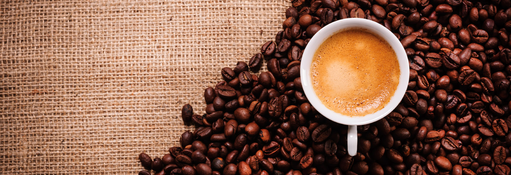
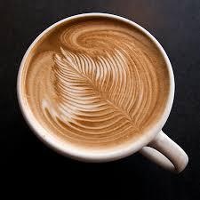
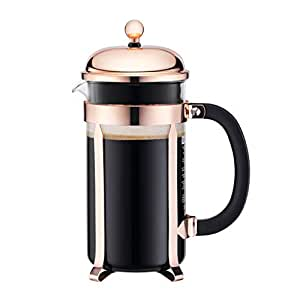
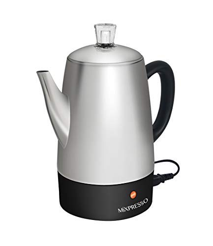
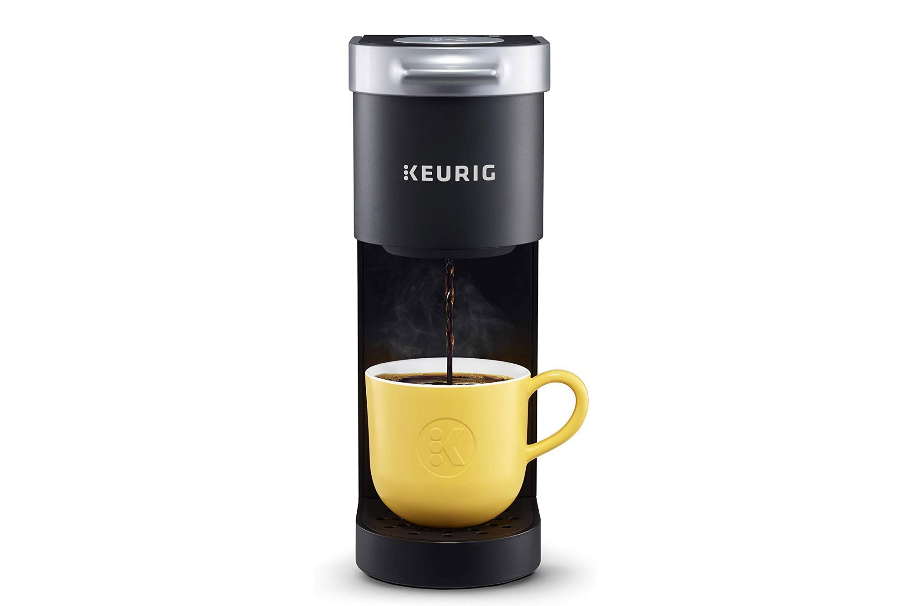
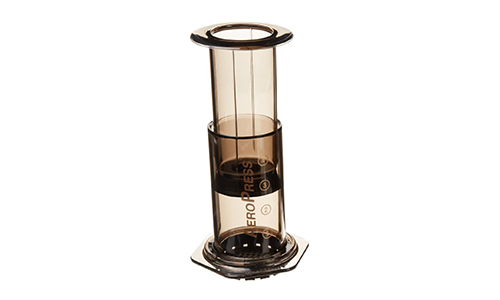
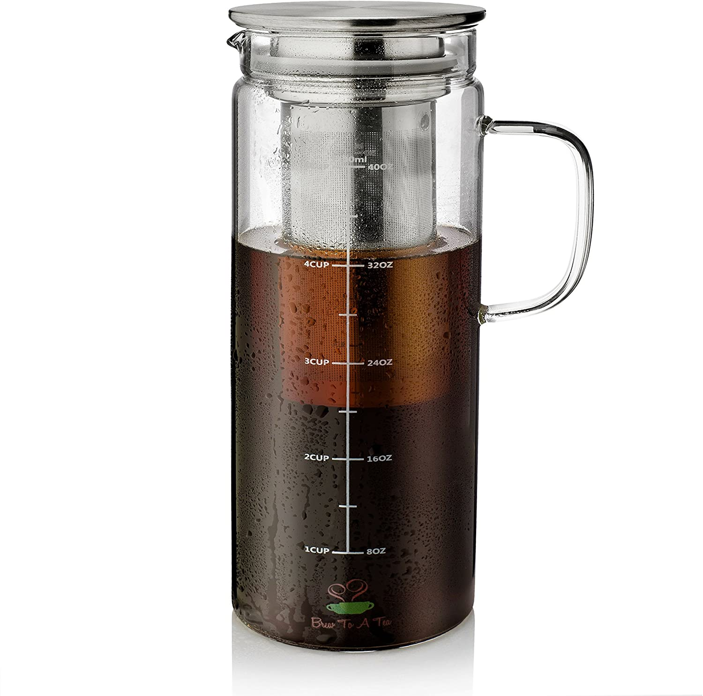
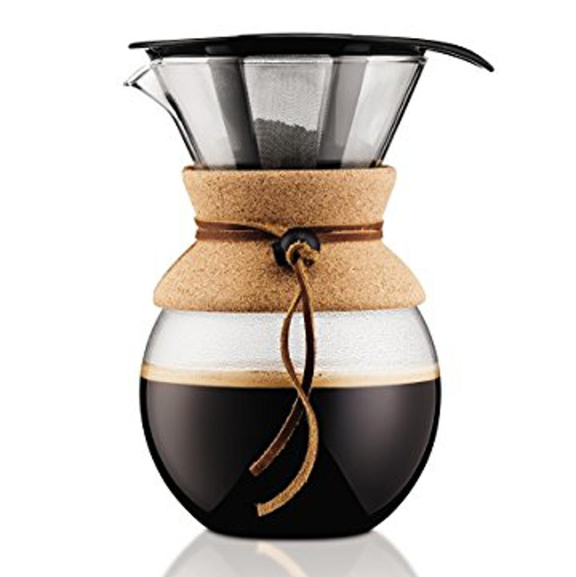

Coffee - Makes You Love !

HISTORY OF COFFEE
1. Coffee was originally from Ethiopia,not long enough,coffee spread quickly to other countries
through the merchant traders.
2. In the mid 15th century,there had been proofs of coffee drinking in Yemen's Sufi monastries;they
used this to keep themselves alert during night devotions.
3. In 1645,Coffee became popular and the first coffee house was opened in italy and gradually more
are all over the country.
4. In the 18th century,coffee reached America,and become the worldwide commodity.
5. In the 19th century, enterpreneurs started selling Pre-roasted coffee,and in 1971 the first
starbucks opened,coffee become one of the second most
important commodities in world trade
6. As to this century,thousands of coffee shops were opened and different kinds of coffee beverage
came out
HEALTH BENEFITS OF COFFEE
* Boosts energy level
* Can aid in weight loss
* Improves physical performance
* Coffee can lower risk of diabetes
* Is very beneficial for the liver
* Helps cleanse the stomach
* Reduces depression
* Reduces risk of cancer
TYPES OF COFFEE DRINKS

Black coffee
Black coffee is simply coffee that is normally brewed without the addition of additives such as
sugar,
mil k, cream, or added flavors. While it has a slightly bitter taste compared to when it is flavored
with
additives, many people love a strong cup of black coffee. In fact, for some, it is part of their
everyday
diet.

Latte
Caffè latte, often shortened to just latte in English, is a coffee drink of Italian origin made
with espresso and steamed milk.
In Italy, caffè latte is almost always prepared at home, for breakfast only. The coffee is brewed with a
stovetop moka pot and poured into a cup containing heated milk.

Cappuccino
A cappuccino is an espresso-based coffee drink that originated in Austria with later development
taking
place in Italy, and is prepared with steamed milk foam. Variations of the drink involve the use of cream
instead of milk, using non-dairy milk substitutes and flavoring with cinnamon or chocolate powder.

Americano
Caffè Americano is a type of coffee drink prepared by diluting an espresso with hot water,
giving it a similar strength to, but different flavor from, traditionally brewed coffee. The strength of
an Americano varies with the number of shots of espresso and the amount of water added.

Espresso
Espresso is a coffee-brewing method of Italian origin, in which a small amount of nearly boiling
water is forced under 9–10 bars of pressure through finely-ground coffee beans. Espresso coffee can be
made with a wide variety of coffee beans and roast degrees.

Doppio
Doppio espresso is a double shot which is extracted using double the amount of ground coffee in
a larger-sized portafilter basket. This results in 60 ml of drink, double the amount of a single shot
espresso. Doppio is Italian multiplier, meaning "double".
TYPES OF COFFEE MAKERS

French press
A French press, also known as a cafetière, cafetière à piston, caffettiera a stantuffo, press
pot, coffee press, or coffee plunger, is a coffee brewing device, although it can also be used for other
tasks.

Percolator
A coffee percolator is a type of pot used for the brewing of coffee by continually cycling the
boiling or nearly boiling brew through the grounds using gravity until the required strength is reached.

Single serve
The one-of-a-kind Scoop Single Serve Coffee Maker is the best single serve coffee maker in the
market with a unique coil brew system that gives you faster, hotter and better tasting coffee each time.

Aeropress
The AeroPress is a manual coffeemaker invented by Alan Adler, founder of AeroPress, Inc. It
consists of a cylindrical chamber, and a plunger with an airtight silicone seal, similar to a syringe.
Ground coffee beans and water are steeped inside, then forced through a filter by pressing the plunger
through the chamber.

Cold brew
Cold Brewing is a method of brewing coffee where ground coffee beans are steeped in room
temperature water for more than 20 hours. Cold Brewed Coffee a.k.a Cold Brew is the coffee concentrate
that you get after the brewing is complete. ... The most common method used by almost all coffee shops
around is called espresso.

Pour over
Simply place the dripper on top of your favorite mug, add the filter and the coffee grounds, add
hot water and the rest of the work is done by the brewer. It automatically regulates water distribution
for ideal brew time. It's pour-over coffee, but you don't actually have to do any of the pouring.
Contact
Opposite muncipal office, Edappally
+91 9605398032
coffeelover456@gmail.com
Connect us